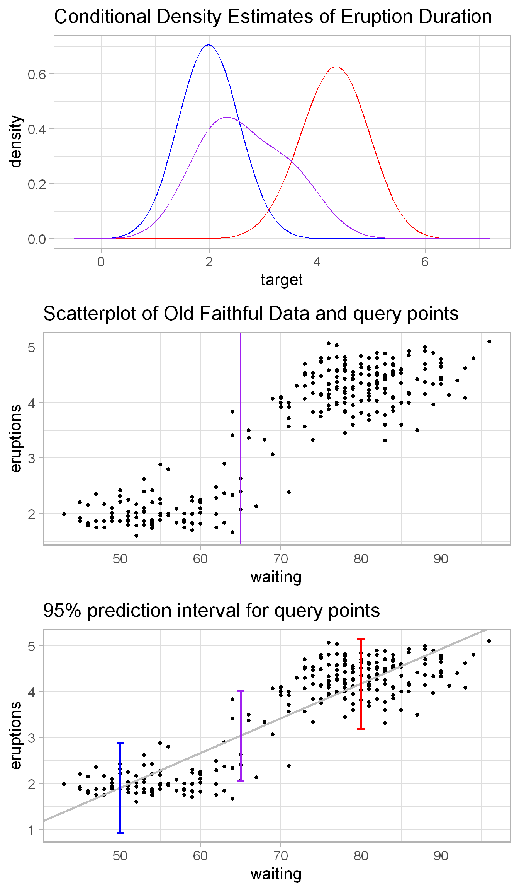
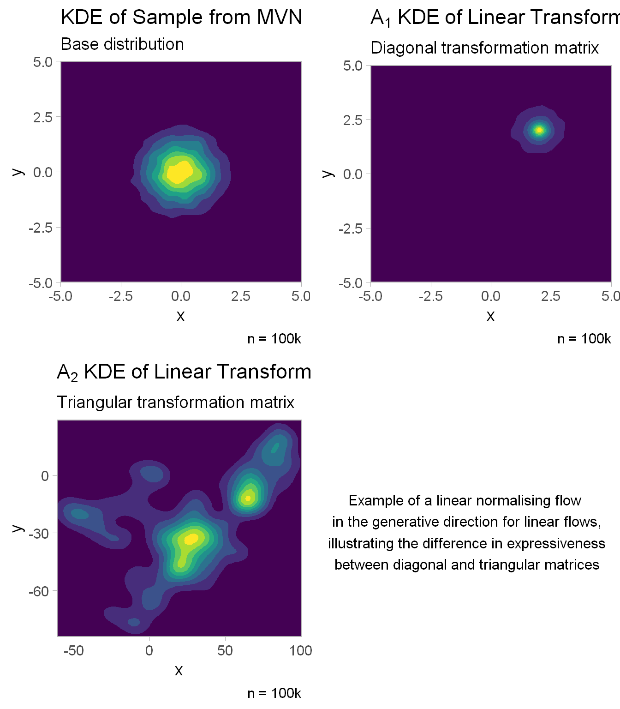
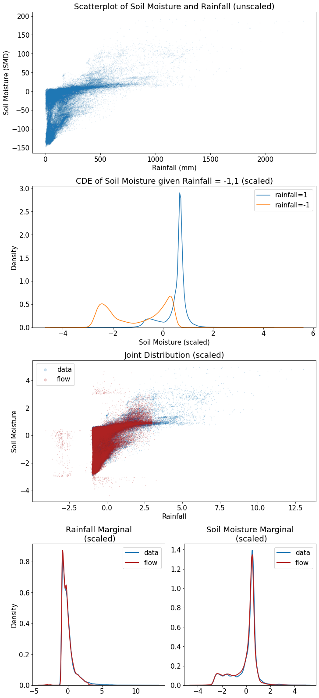

Normalising Flows for Conditional Density Estimation
Matthew Skiffington1
@mattskiff_
mks29@students.waikato.ac.nz
Department of Computer Science, University of Waikato
Conditional Density Estimation
Figure 1: QR code for CDE animation
Conditional density estimation (CDE) is a form of supervised learning with methods in statistics, machine learning and deep learning. It is a generalisation of regression. Instead of predicting a point estimate and generating a confidence or credible interval , the task is to predict the full conditional density of the data for a given query point , an improved form of uncertainty quantification.
Figure 2 shows Kernel-CDE [1] [2] using the faithful geyser data via the hdrcde R package, demonstrating an improvement in uncertainty quantification by using CDE instead of intervals. Early CDE methods included Kernel-CDE, Mixture Density Networks [3] and discretisation of the target variable via class probability estimators [4] (Figure 1). Modern methods for CDE include Random Forest-CDE [5] and Bottleneck Conditional Density Estimation, a variation on Conditional-VAEs [6].

Figure 2: Demonstration of estimation using KCDE vs Simple Linear Regression & Prediction Intervals
Normalising Flows
Normalising flows (NFs) are sequences of invertible, differentiable, composable, transformations (bijections) on a base probability distribution (often a simple Gaussian) to approximate the true density, which may be skewed, multi-modal or complex (even discontinuous) [7]. NFs were proposed as a density estimation procedure [8], then for use as approximate posteriors in variational inference [9]. They came to prominence for efficiency and expressiveness in both sampling (generative direction) and density evaluation (normalising direction). NFs fit alongside VAEs and GANs as recent deep learning generative models, however, VAEs and GANs are not efficient for density evaluation.
By the term normalising flows people mean bijections which are convenient to compute, invert, and calculate the determinant of their Jacobian [7].

Figure 3: Expressiveness and efficiency varies by choice of flow
Normalising flows are trained by maximising log-likelihood via stochastic gradient descent, or minimising Kullback-Liebler divergence when variational inference is used. Three properties are important for NFs [7]:
- Efficiency
- Expressiveness
- Invertibility
The number of layers and class of model both influence the expressiveness of the trained distribution. Figure 3 shows a sample from a Multivariate Normal: transformed using two simple (inexpressive) linear flows, where and . For and , positive entries on the diagonal ensure invertibility. However, moving from a diagonal to triangular matrix incurs a computation cost, moving from to when calculating the inverse.
Practical NF models often use coupling functions (NICE, RealNVP, Neural Spline Flows, Glow). Coupling functions split the input into disjoint partions, applying an arbitrarily complex conditioning function (e.g. an invertible neural network) to one. Other models use coupling functions where the conditioner is autoregressive (Masked Autoregressive Flows, Inverse Autoregressive Flows, Neural Autoregressive Flows). Recent developments include continuous NFs using neural ordinary differential equations (e.g. FFJORD), work on ordinal data and on manifold learning [7].
NFs for CDE
Normalising flows find applications in conditional class probability estimation, conditional image generation and multivariate time series prediction. Work on CDE with NFs is limited. This includes Bayesian NFs, with a framework for priors over CDE estimators using Bayesian neural networks with variational inference [10]. CDE using Masked Autoregressive Flows and Real NVP by conditioning each term in the chain rule of probability with the inclusion of at every layer was proposed in 2017 [11]. This was explored while introducing noise regularisation for CDE in 2019 [12]. Conditional NFs for structured prediction have also been developed [13]. Progress in using NFs for CDE has been limited by the following factors:
- Computational difficulty of scaling NFs to large data sets - newer continuous NF models are restricted to usage on small image benchmark sets [14].
- Deep learning focus is often in areas of traditional strength, e.g. image data.
Figure 4 demonstrates using NFs to create CDEs of rainfall & soil moisture (data source: NIWA, 10 months). We scale the data, train the flow, and condition on two levels of rainfall , showing the conditional densities. Note the separate estimates have different modalities, which could reflect a differing seasonal effect. Other climatological and spatio-temporal factors would be extra sources of variation not considered. The marginals are simulated well while the joint is poorly approximated (and noisy).

Figure 4: Traing NFs for CDE with climatological data
The probabilistic programming libraries pyro (for PyTorch) and tensorflow probability both implement NFs.
References
[1]
D. M. Bashtannyk and R. J. Hyndman, “Bandwidth selection for kernel conditional density estimation,” Computational Statistics & Data Analysis, vol. 36, no. 3, pp. 279–298, 2001.
[2]
M. Rosenblatt, “Conditional probability density and regression estimators,” Multivariate analysis II, vol. 25, p. 31, 1969.
[3]
M. Carney, P. Cunningham, J. Dowling, and C. Lee, “Predicting probability distributions for surf height using an ensemble of mixture density networks,” in Proceedings of the 22nd international conference on machine learning, 2005, pp. 113–120.
[4]
E. Frank and R. R. Bouckaert, “Conditional density estimation with class probability estimators,” in Asian conference on machine learning, 2009, pp. 65–81.
[5]
T. Pospisil and A. B. Lee, “Rfcde: Random forests for conditional density estimation,” arXiv preprint arXiv:1804.05753, 2018.
[6]
R. Shu, H. H. Bui, and M. Ghavamzadeh, “Bottleneck conditional density estimation,” in International conference on machine learning, 2017, pp. 3164–3172.
[7]
I. Kobyzev, S. Prince, and M. Brubaker, “Normalizing flows: An introduction and review of current methods,” IEEE Transactions on Pattern Analysis and Machine Intelligence, 2020.
[8]
E. G. Tabak, E. Vanden-Eijnden, and others, “Density estimation by dual ascent of the log-likelihood,” Communications in Mathematical Sciences, vol. 8, no. 1, pp. 217–233, 2010.
[9]
D. Rezende and S. Mohamed, “Variational inference with normalizing flows,” in International conference on machine learning, 2015, pp. 1530–1538.
[10]
B. L. Trippe and R. E. Turner, “Conditional density estimation with bayesian normalising flows,” arXiv preprint arXiv:1802.04908, 2018.
[11]
G. Papamakarios, T. Pavlakou, and I. Murray, “Masked autoregressive flow for density estimation,” arXiv preprint arXiv:1705.07057, 2017.
[12]
J. Rothfuss et al., “Noise regularization for conditional density estimation,” arXiv preprint arXiv:1907.08982, 2019.
[13]
C. Winkler, D. Worrall, E. Hoogeboom, and M. Welling, “Learning likelihoods with conditional normalizing flows,” arXiv preprint arXiv:1912.00042, 2019.
[14]
W. Grathwohl, R. T. Chen, J. Bettencourt, I. Sutskever, and D. Duvenaud, “Ffjord: Free-form continuous dynamics for scalable reversible generative models,” arXiv preprint arXiv:1810.01367, 2018.
Poster produced via the posterdown package. The code to reproduce this poster is at https://github.com/MattSkiff/nf_cde_poster.↩︎